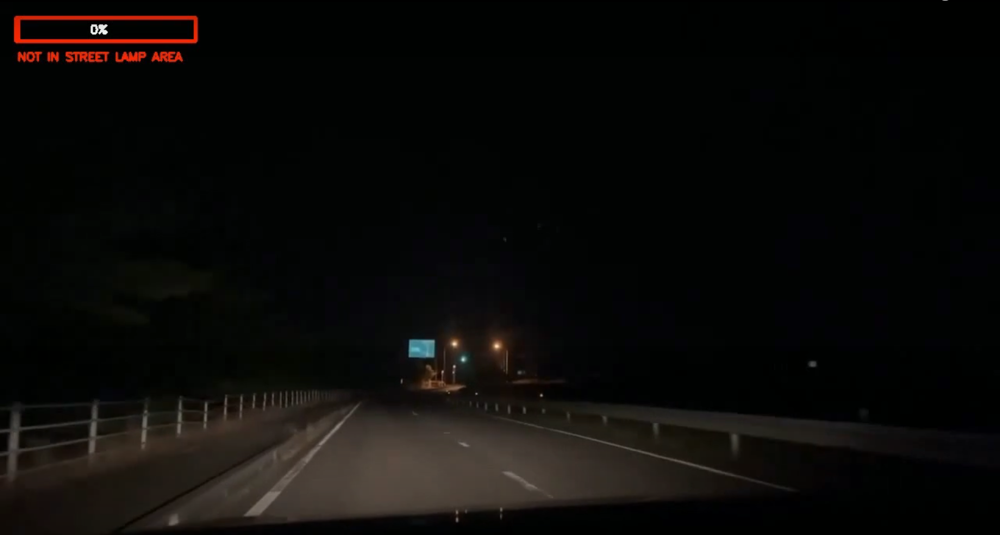
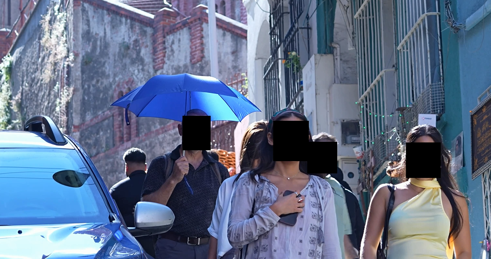
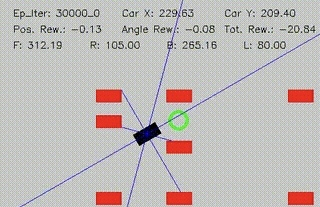
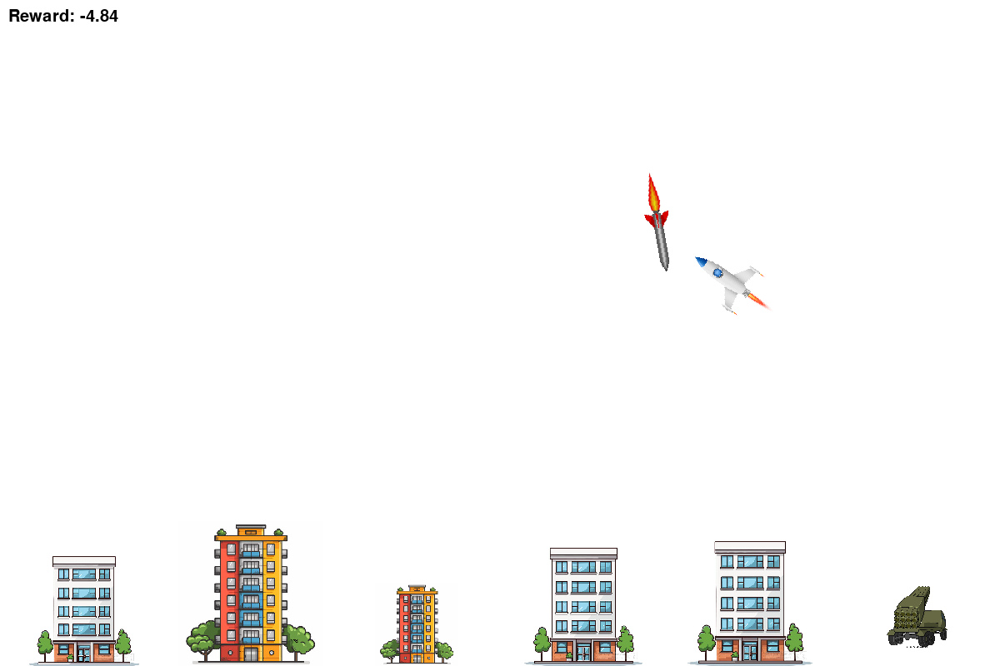
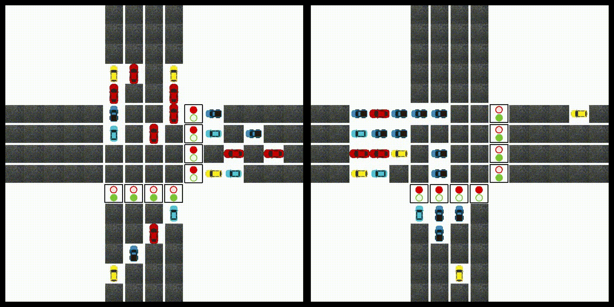
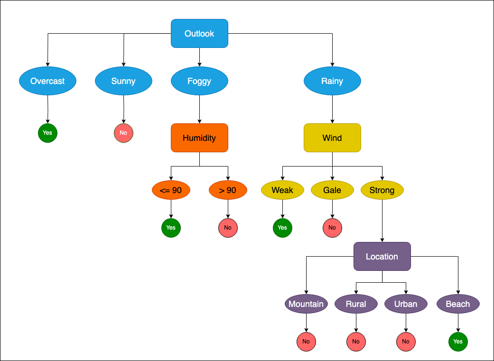
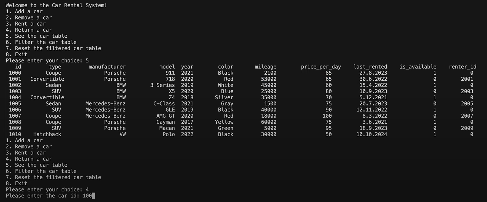
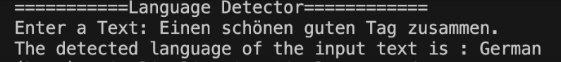

Street Lamp Area Detection
Developed a system for real-time street lamp area detection using classical vision and CNNs, enabling automatic high beam control based on lighting conditions.
More Details
Face Anonymizer in Rust using YOLOv8
Developed a system for real-time face anonymization in Rust using a YOLOv8 face detector.
More Details
Autonomous Car Navigation using PPO
Developed a Reinforcement Learning project using Proximal Policy Optimization to train an agent navigating to a goal in a free environment.
More Details
Rocket Interceptor using Deep Q-Network
A reinforcement learning-based interception system where a DQN agent learns to control a defensive rocket in a custom simulated environment.
More Details
Traffic Signal Control using Deep SARSA
Optimized traffic signal control at a junction using Deep SARSA, learning through rewards instead of predefined rules.
More Details
Decision Tree with Rust
Implemented a decision tree using the ID3 algorithm in Rust, as part of the lab course Efficient AI with Rust at RWTH Aachen University.
More Details
Image Segmentation using Mixture of Gaussians
Implemented foreground/background segmentation using the Mixture of Gaussians algorithm to deepen understanding from a computer vision lecture.
More Details
Car Rental System
Demonstrated proficiency in OOP with C++ and the Bazel build system by developing a car dataset manager supporting renting, returning, adding, and removing cars.
More Details
Language Detector
Trained a Multinomial Naive Bayes model on a multilingual dataset, accurately identifying the language of any given sentence after preprocessing.
More Details